Pip · cebindekileri gösteriyor
My hands … empty. Look!
Önce dinle, sonra kelimeyi seç. Yanlışta ceza yok; Silas ipucu verir.
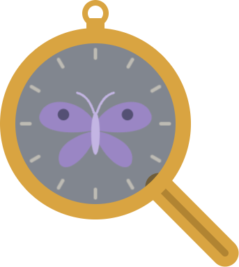
SALTMERE İndirSALTMERE · 1893 · İNGİLİZCE POLİSİYE
İngilizceyi çalışarak değil, bir polisiye dizinin içinde yaşayarak öğren. Sisli bir liman kenti, seslendirilmiş karakterler ve her gün yeni bir vaka.
İFADE TUTANAĞI · A1
Bu iki adım doğrudan ilk vakadan. Sesler uygulamadaki karakter sesleri, sahne de oyundaki sahafın kendisi.
Pip · cebindekileri gösteriyor
My hands … empty. Look!
Önce dinle, sonra kelimeyi seç. Yanlışta ceza yok; Silas ipucu verir.
Mrs. Bramble'ın sahafı. Dokun, bul, öğren.
Sahnede bul: window 0 / 3
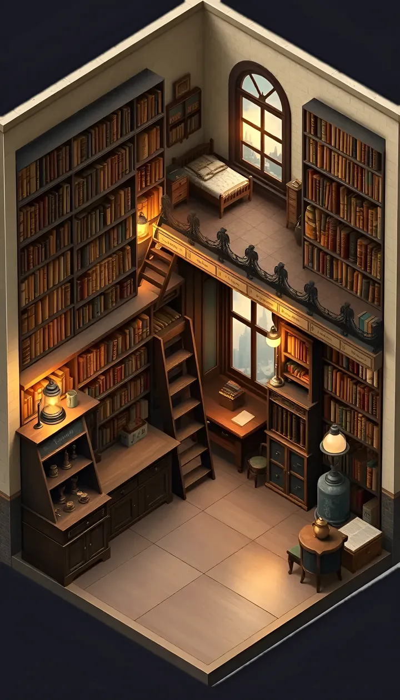
Odada pencereyi bul ve üstüne dokun.
NASIL OYNANIR
İngilizce hikâyenin dışında bir ödev değil, hikâyeyi çözmenin anahtarı.
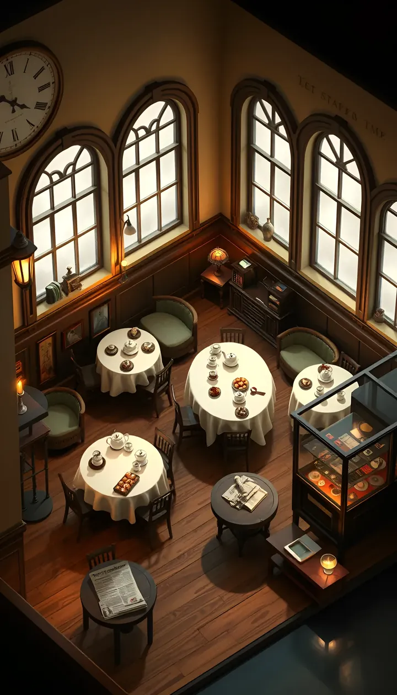
Her replik seslendirilmiş. Anlamadığın kelimeye dokun, Türkçesi gelsin; istersen Defter'ine ekle.
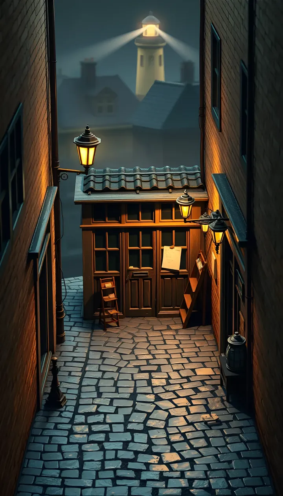
Olay yerinde nesneleri bul, ipuçlarını panoya as. Kelimeler bir listede değil, sahnenin içinde.
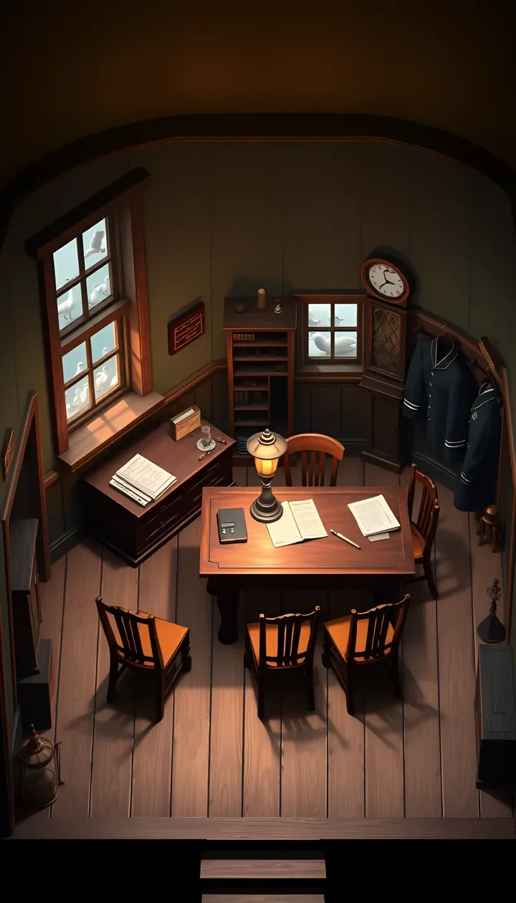
Şüphelileri tek tek dinle, doğru soruyu İngilizce kur, ifadelerdeki çelişkiyi yakala.
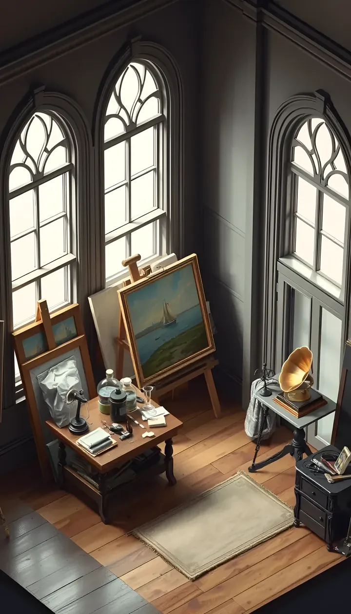
Seçimlerin ilişkileri değiştirir. Geri sayım yok; düşünmek için istediğin kadar vaktin var.
KİLİT ANLAR
Döndür, seç, izle. Hikâyenin en önemli anları uygulamada kısa sinematik sahnelerle anlatılır.
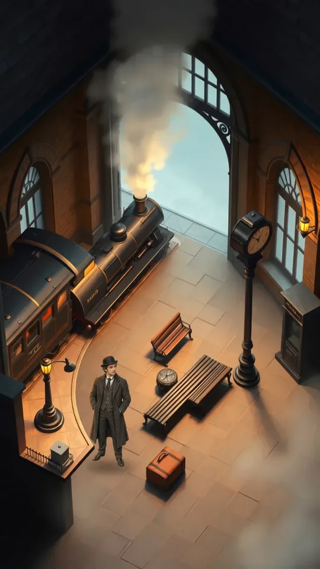
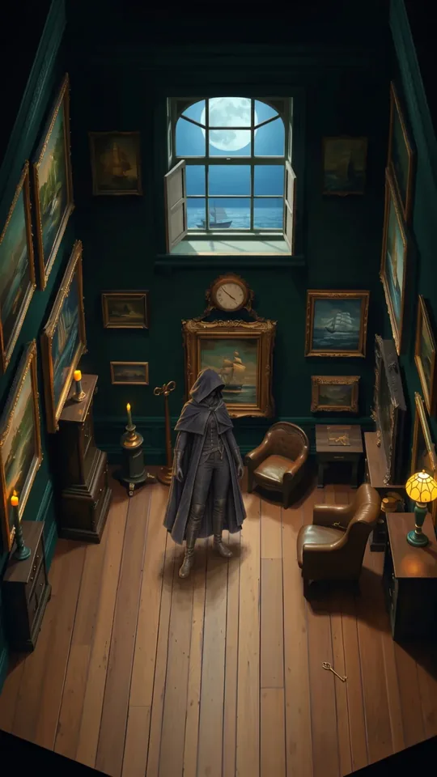
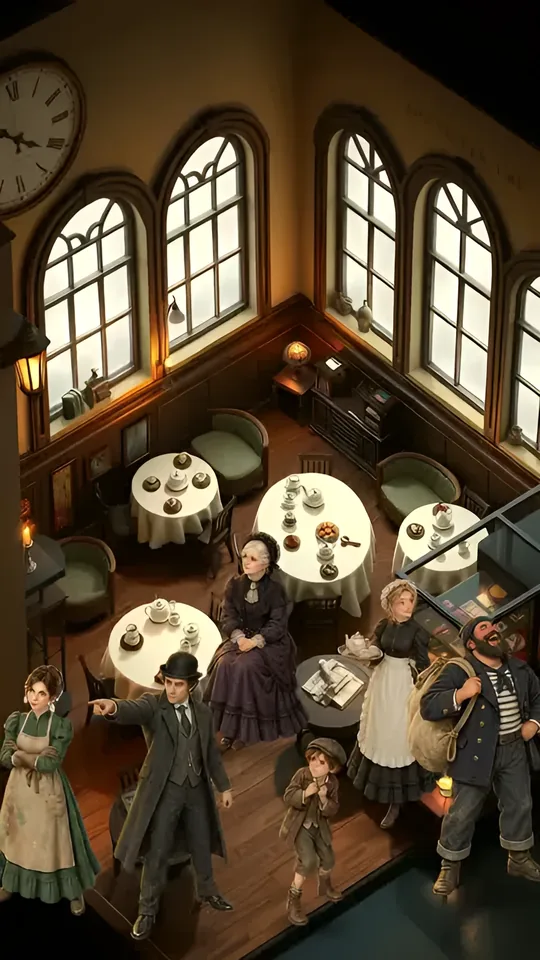
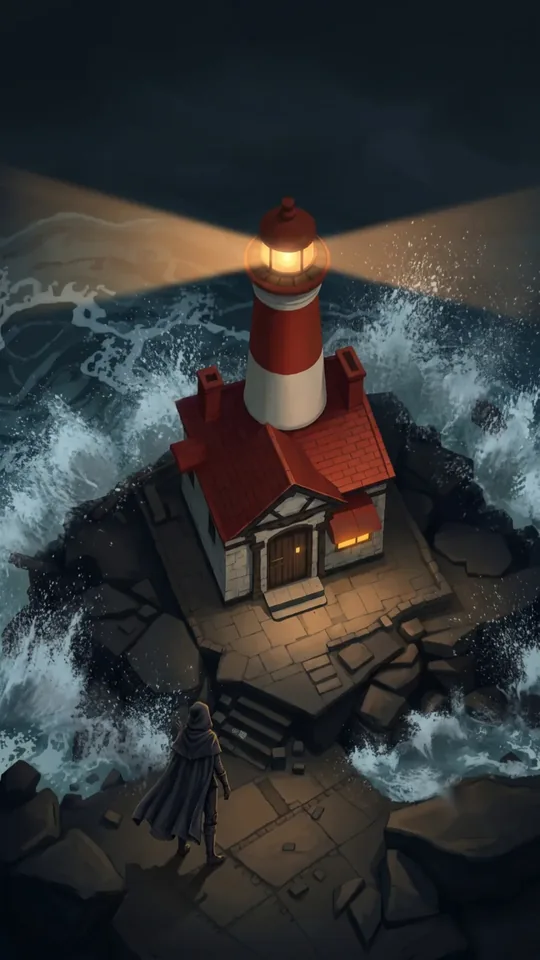
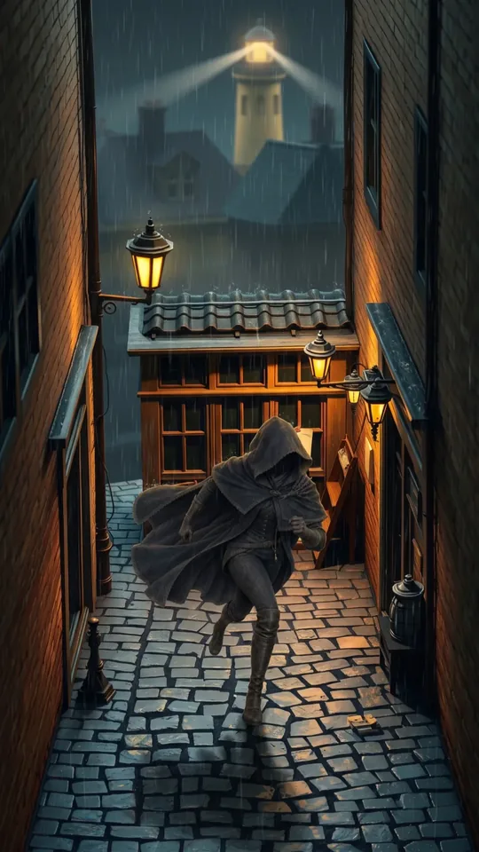
VAKA ARŞİVİ
Her sezon bir CEFR seviyesi ve şehrin bir semti. Sezon finali aynı zamanda seviye sınavı: geçince yeni semt açılır.
Saltmere'de ilk gün: kayıp bir gümüş kaşık ve geceleri çatılarda dolaşan bir hırsız.
Dil: to be, şimdiki zaman, emirler, ilk sorular
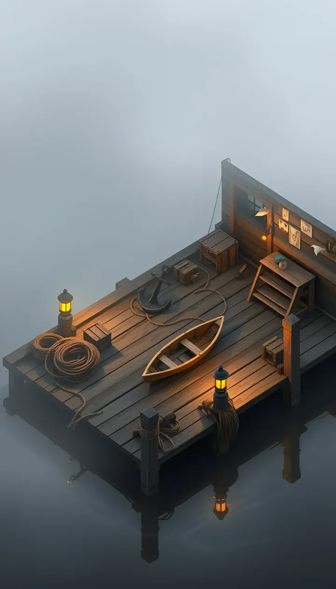
Pulsuz bir mektup, gece yanıp sönen fener ve iskelede kaybolan izler.
Dil: geçmiş zaman, karşılaştırma, olay anlatma
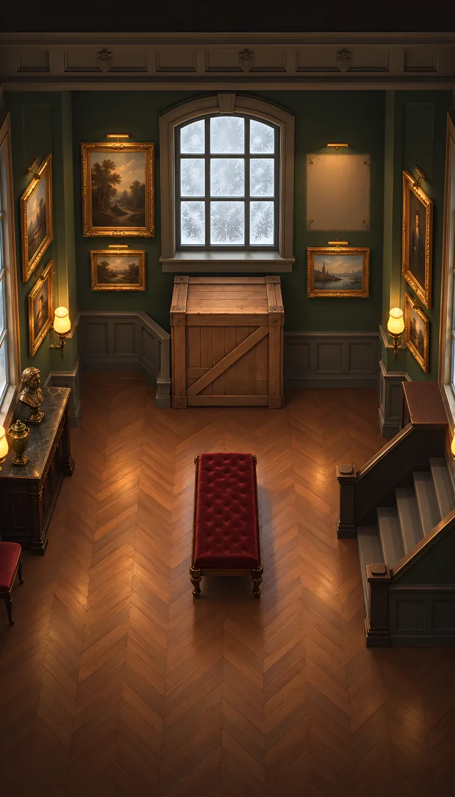
Galeriler, müzayedeler ve bir taklitçi. Kim gerçek, kim kopya?
Dil: must / can't, used to, edilgen, ikna etmek
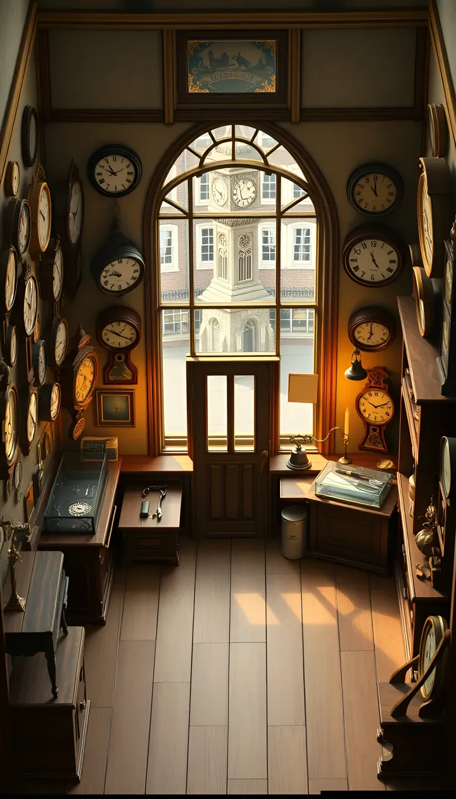
Zengin evlerin kapalı kapıları ardında bir maske.
Dil: wish, koşul cümleleri, öbek fiiller
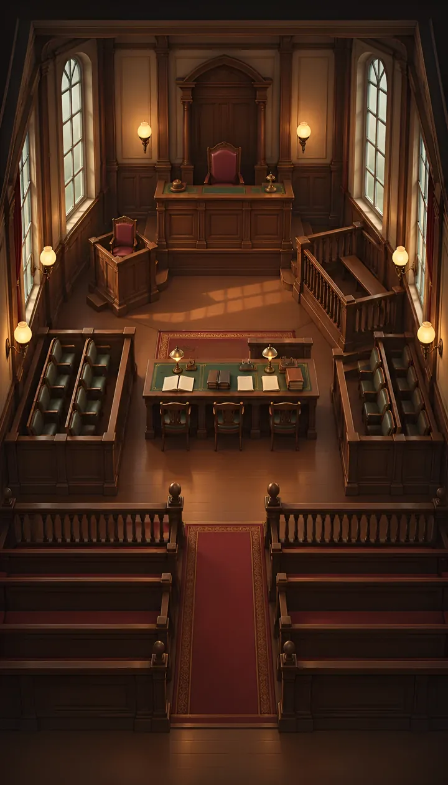
Mahkeme salonunda her kelime bir kanıt. Çapraz sorguda soruları sen kurarsın.
Dil: resmî dil, devrik yapılar, temkinli ifade
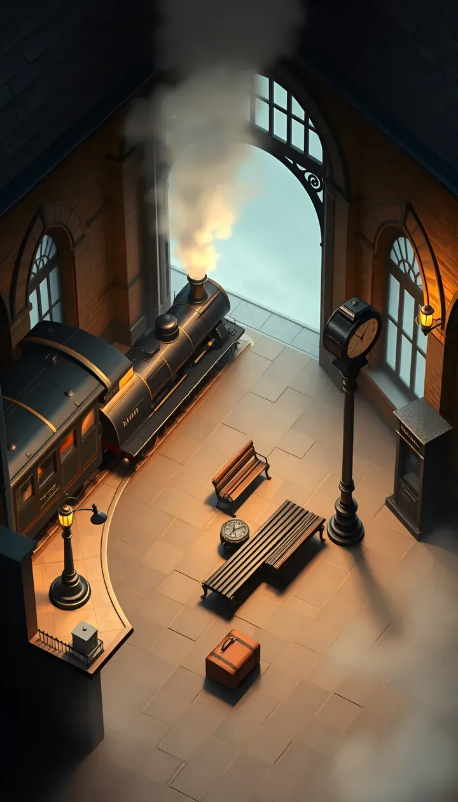
Bütün iplerin birleştiği büyük final. Son tren, son mektup.
Dil: üslup, ima, edebî metin okuma
Sezonlar CEFR seviyelerine göre tasarlanmıştır. Uygulama resmî bir dil sertifikası vermez ve belirli bir sürede seviye kazanma garantisi vermez.
SALTMERE DOSYALARI
Kartlara dokun, arkasını çevir. Spoiler yok; yalnızca ilk izlenimler.
Evet. Sezon 1 (A1) ilk kelimelerle ve kısa cümlelerle başlar. Anlamadığın her kelimeye dokunup Türkçesini görebilirsin. Açılıştaki seviye testinde "Hiç bilmiyorum" deyip doğrudan başlayabilirsin.
Zorunlu değil. Test 12 kısa maddeden oluşur: karakterleri dinler, eksik kelimeyi ya da cümleyi yazarsın. Tahmin etmek yerine "Bilmiyorum, doğrusunu göster" diyebilirsin. Sonuç A1, A2 ya da B1 çıkar; B1'den başlarsan önceki sezonlar Hızlı Mod'la açılır.
Hayır. Baştan başlayıp ilk sezonları Hızlı Mod'da hızla geçebilir ya da kendi seviyendeki sezona geçip önceki sezonların özetine bakabilirsin. Bitirdiğin sezonlar Arşiv'de her zaman açık.
Hiçbir şey kaybetmezsin: can, ceza ya da bölümü baştan başlatma yok. Önce bir ipucu, sonra seçenekler gelir. Yanlış yaptığın kelimeler Defter'ine "tekrar" olarak eklenir ve sonra yeniden karşına çıkar.
Her sezonun son bölümü bir sınavdır. Geçince yeni sezon ve şehrin yeni semti açılır. Geçemezsen hangi konuları ve hangi bölümleri tekrar etmen gerektiği gösterilir; istediğin kadar yeniden girebilirsin, kazandıkların silinmez.
İkisi de var. Bölümlerde dinleyip boşluk doldurursun, kelime ya da tam cümle yazarsın, şüphelilere İngilizce soru kurarsın. Seviye yükseldikçe kendi cümlelerini kurduğun ikna ve sorgu sahneleri gelir.
Hayır. Bölümler, sesler ve sahneler uygulamanın içinde; internet olmadan da oynayabilirsin.
Ücretsiz planda her gün 2 yeni vaka açılır. Defter'indeki kelimelerle kısa bir tekrar yaparak ("Tekrarla aç") günde 4 vakaya kadar daha açabilirsin. Android'de isteğe bağlı ödüllü reklamla günde 10 vakaya kadar daha açılır. Premium'da günlük sınır yoktur. Bitirdiğin vakalar her zaman açıktır.
Tek seferlik satın almadır, abonelik yoktur. Normal fiyatı 349,99 ₺; çıkışa özel 244,99 ₺ (Google Play'de 10 Kasım'a kadar, App Store'da çıkışından itibaren 2 hafta). C1 ve C2 sezonlarını açar, günlük vaka sınırını kaldırır ve Android'de reklamları kaldırır. Kesin fiyatı satın almadan önce mağaza gösterir.
Hayır. Reklam yalnızca ücretsiz sezonlarda ek vaka açar. C1 ve C2 yalnızca Premium ile açılır, ayrıca C1'e geçmek için B2 sınavını geçmen gerekir.
Hayır. Aynı App Store ya da Google Play hesabıyla Ayarlar → Saltmere Premium → "Satın alımımı geri yükle" demen yeterli.
Saltmere 13 yaş ve üzeri içindir. 13–17 yaş arası oyuncular ücretsiz sezonların tamamını oynar ve ilerlemeleri yalnızca kendi telefonlarında kalır. Reklam, satın alma ve bulut yedeği 18 yaşında açılır.
Hesap açmak, e-posta ya da şifre vermek gerekmez. Yetişkin oyuncuların ilerlemesi isimsiz bir hesapla yedeklenebilir. Ayrıntılar gizlilik politikasında. Verilerini uygulamada Ayarlar → Hesap ve gizlilik → "Verilerimi sil" ile silebilirsin.
iPhone ve Android telefonlarda. İlk sürüm yalnızca Türkiye mağazalarında yayınlanıyor.
İlk vaka, ilk kelime, ilk ipucu. Saltmere çok yakında App Store ve Google Play'de.